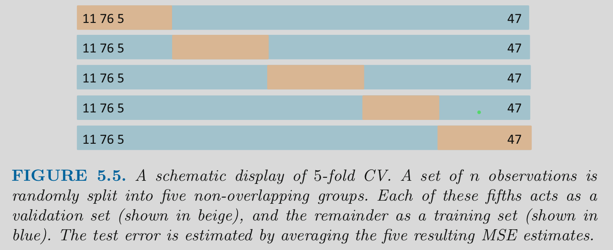

Resampling Methods for Model Selection and Evaluation
Overview of Unit
Learning Objectives
- Bias vs. variance wrt model performance estimates
- How is this different from bias vs. variable of model itself
- Methods for computationally intense calculations
- Parallel processing
- Cache
- Types of resampling
- Validation set approach
- Leave One Out CV
- K-Fold and Repeated K-Fold
- Grouped K-Fold
- Bootstrap resampling
- Use of resampling for tuning hyperparameters
- Combining these resampling approaches with a Test set
- Used for simultaneous model selection and evaluation
- Single independent test set
- Advanced topic: Nested resampling
Readings
Kuhn and Johnson (2018) Chapter 4, pp 61 - 80
Supplemental: James et al. (2023) Chapter 5, pp 197 - 208 186
Lecture Videos
- Lecture 1: Overview & Parallel Processing ~ 16 mins
- Lecture 2: Introduction to Resampling ~ 11 mins
- Lecture 3: Single Validation/Test Set Approach ~ 26 mins
- Lecture 4: Leave One Out Cross Validation ~ 9 mins
- Lecture 5: K-fold Cross Validation Approaches ~ 21 mins
- Lecture 6: Repeated and Grouped K-fold Approaches ~ 11 mins
- Lecture 7: Bootstrap Resampling ~ 11 mins
- Lecture 8: Using Resampling to Select Best Model Configurations ~ 17 mins
- Lecture 9: Resampling for Both Model Selection and Evaluation ~ 11 mins
- Lecture 10: Nested Resampling
Post questions or discuss readings or lectures on Slack
Application Assignment and Quiz
Post questions to application_assignments Slack channel
Submit the application assignment here and complete the unit quiz by 8 pm on Wednesday, February 21st
Some Technical Details for Costly Computations
Before we dive into resampling, we need to introduce two coding techniques that can save us a lot of time when implementing resampling methods
- Parallel processing
- Caching time-consuming computations
Parallel Processing
When using resampling, we often end up fitting many, many model configurations
- This can be the same model configuration in many different training sets
- Or many different model configurations in many different training sets (even more computationally demanding)
Critically
- The fitting process for each of these configurations is independent for the others
- The order that the configurations are fit doesn’t matter either
- When these two criteria are met, the processes can be run in parallel with an often big time savings
To do this in R, we need to set up a parallel processing backend
- Lots of options and details depending on the code you intend to run in parallel to do it really well
- We can discuss some of these issues/details and other solutions (i.e., High Throughput Computing at CHTC)
- Some options are OS specific
- Provide more details elsewhere
TLDR - copy the following code chunk into your scripts after you load your other libraries (e.g., tidyverse and tidymodels)
Using Cache
Even with parallel processing, resampling procedures can STILL take a lot of time, particularly on notebook computers that don’t have a lot of cores available
In these instances, you may also want to consider caching the result
- When you cache some set of calculations, you are essentially saving the results of the calculations
- If you need to run the script again, you simply load the saved calculations again from disk, rather than re-calculating them (its much quicker to just read them from a file)
But…
- You need to redo the calculations if you change anything in your script that could affect them
- This is called “invalidating the cache”
- You need to be very careful to reuse the cache when you can but also to invalidate it when the calculations have changed
In other notes, we describe three options to cache calculations that are available in R.
- You should read more about those options if you plan to use one
- Our preferred solution is to use
xfun::cache_rds() - Read the help for this function (
?xfun::cache_rds) if you plan to use it - Cache is complicated and can lead to errors.
- But cache can also save you a lot of time during development!
Start by loading only that function for the xfun package. You can add this line of code after your other libraries (e.g., tidyverse, tidymodels)
To use the function
- You will pass the code for the calculations you want to cache as the first argument (
expr) to the function inside a set of curly brackets{} - You need to list the path (
dir =) and filename (file =) for the rds file that will save the cached calculations.- The
/at the end of the path is needed.
- You should use a meaningful (and distinct) filename.
- The
- Provide
rerun = FALSEas a third argument.- You can set this to true temporarily if you need to invalidate the cache to redo the calculations
- We like to set it up as an environment variable (see
rerun_settingbelow) - Keep it as FALSE during development
- Set it to TRUE at the end of our development so that we make sure we didn’t make any cache invalidation errors
- You may also provide a list of globals to
hash =. See more details at previous link
We will demonstrate the use of this function throughout the book. BUT you do not need to use it if you find it confusing.
Introduction to Resampling
We will use resampling for two goals:
- To select among model configurations based on relative performance estimates of these configurations in new data
- To evaluate the performance of our best/final model configuration in new data
For both of these goals we are using new data to estimate performance of model configuration(s)
There are two kinds of problems that can emerge from using a sub-optimal resampling approach
- We can get a biased estimate of model performance (i.e., we can systematically under or over-estimate its performance)
- We can get an imprecise estimate of model performance (i.e., high variance in our model performance metric if it was repeatedly calculated in different samples of held-out data)
Essentially, this is the bias and variance problem again, but now not with respect to the model’s actual performance but instead with our estimate of how the model will perform
This is a very important distinction to keep in mind or you will be confused as we discuss bias and variance into the future. We have:
- bias and variance of model performance (i.e., the predictions the model makes)
- bias and variance of our estimate of how well the model will perform in new data
- different factors affect each
Let’s get a dataset for this unit. We will use the heart disease dataset from the UCI Machine Learning Repository. We will focus on the Cleveland data subset, whose variable are defined in this data dictionary
These data are less well prepared
- No variable/column names exist
- NA is coded with
? - Use
rename()to add tidy variable names
- Indicating that column names are NOT on the first row. First row begins with data
- Specifying a non-standard value for NA
Code categorical variables as factors with meaningful text labels (and no spaces)
data_all <- data_all |>
mutate(disease = factor(disease, levels = 0:4,
labels = c("no", "yes", "yes", "yes", "yes")),
sex = factor(sex, levels = c(0, 1), labels = c("female", "male")),
fbs = factor(fbs, levels = c(0, 1), labels = c("no", "yes")),
exer_ang = factor(exer_ang, levels = c(0, 1), labels = c("no", "yes")),
exer_st_slope = factor(exer_st_slope, levels = 1:3,
labels = c("upslope", "flat", "downslope")),
cp = factor(cp, levels = 1:4,
labels = c("typ_ang", "atyp_ang", "non_anginal", "non_anginal")),
rest_ecg = factor(rest_ecg, levels = 0:2,
labels = c("normal", "abnormal1", "abnormal2")),
rest_ecg = fct_collapse(rest_ecg,
abnormal = c("abnormal1", "abnormal2")),
thal = factor(thal, levels = c(3, 6, 7),
labels = c("normal", "fixeddefect", "reversabledefect"))) |>
glimpse()Rows: 303
Columns: 14
$ age <dbl> 63, 67, 67, 37, 41, 56, 62, 57, 63, 53, 57, 56, 56, 44…
$ sex <fct> male, male, male, male, female, male, female, female, …
$ cp <fct> typ_ang, non_anginal, non_anginal, non_anginal, atyp_a…
$ rest_bp <dbl> 145, 160, 120, 130, 130, 120, 140, 120, 130, 140, 140,…
$ chol <dbl> 233, 286, 229, 250, 204, 236, 268, 354, 254, 203, 192,…
$ fbs <fct> yes, no, no, no, no, no, no, no, no, yes, no, no, yes,…
$ rest_ecg <fct> abnormal, abnormal, abnormal, normal, abnormal, normal…
$ max_hr <dbl> 150, 108, 129, 187, 172, 178, 160, 163, 147, 155, 148,…
$ exer_ang <fct> no, yes, yes, no, no, no, no, yes, no, yes, no, no, ye…
$ exer_st_depress <dbl> 2.3, 1.5, 2.6, 3.5, 1.4, 0.8, 3.6, 0.6, 1.4, 3.1, 0.4,…
$ exer_st_slope <fct> downslope, flat, flat, downslope, upslope, upslope, do…
$ ca <dbl> 0, 3, 2, 0, 0, 0, 2, 0, 1, 0, 0, 0, 1, 0, 0, 0, 0, 0, …
$ thal <fct> fixeddefect, normal, reversabledefect, normal, normal,…
$ disease <fct> no, yes, yes, no, no, no, yes, no, yes, yes, no, no, y…We won’t do EDA in this unit but lets at least do a quick skim to inform ourselves
- 303 cases
- a dichotomous outcome, disease (yes or no for heart disease)
- 7 other categorical predictors
- 6 numeric predictors
- 2 missing values for
thal, which is categorical - 4 missing values for ca, which is numeric
| Name | data_all |
| Number of rows | 303 |
| Number of columns | 14 |
| _______________________ | |
| Column type frequency: | |
| factor | 8 |
| numeric | 6 |
| ________________________ | |
| Group variables | None |
Variable type: factor
| skim_variable | n_missing | complete_rate | n_unique | top_counts |
|---|---|---|---|---|
| sex | 0 | 1.00 | 2 | mal: 206, fem: 97 |
| cp | 0 | 1.00 | 3 | non: 230, aty: 50, typ: 23 |
| fbs | 0 | 1.00 | 2 | no: 258, yes: 45 |
| rest_ecg | 0 | 1.00 | 2 | abn: 152, nor: 151 |
| exer_ang | 0 | 1.00 | 2 | no: 204, yes: 99 |
| exer_st_slope | 0 | 1.00 | 3 | ups: 142, fla: 140, dow: 21 |
| thal | 2 | 0.99 | 3 | nor: 166, rev: 117, fix: 18 |
| disease | 0 | 1.00 | 2 | no: 164, yes: 139 |
Variable type: numeric
| skim_variable | n_missing | complete_rate | mean | sd | p0 | p25 | p50 | p75 | p100 | skew | kurtosis |
|---|---|---|---|---|---|---|---|---|---|---|---|
| age | 0 | 1.00 | 54.44 | 9.04 | 29 | 48.0 | 56.0 | 61.0 | 77.0 | -0.21 | -0.55 |
| rest_bp | 0 | 1.00 | 131.69 | 17.60 | 94 | 120.0 | 130.0 | 140.0 | 200.0 | 0.70 | 0.82 |
| chol | 0 | 1.00 | 246.69 | 51.78 | 126 | 211.0 | 241.0 | 275.0 | 564.0 | 1.12 | 4.35 |
| max_hr | 0 | 1.00 | 149.61 | 22.88 | 71 | 133.5 | 153.0 | 166.0 | 202.0 | -0.53 | -0.09 |
| exer_st_depress | 0 | 1.00 | 1.04 | 1.16 | 0 | 0.0 | 0.8 | 1.6 | 6.2 | 1.26 | 1.50 |
| ca | 4 | 0.99 | 0.67 | 0.94 | 0 | 0.0 | 0.0 | 1.0 | 3.0 | 1.18 | 0.21 |
We will be fitting a logistic regression with all of the predictors for the first half of this unit
Lets set up a recipe for feature engineering with this statistical algorithm
- Impute missing data for all numeric predictors using median imputation
- Impute missing data for all nominal predictors using the modal value
- Dummy code all nominal predictors
The order of steps in a recipe matter
While your project’s needs may vary, here is a suggested order of potential steps that should work for most problems according to tidy models folks:
- [Convert character to factor] (we do this outside our recipe as part of cleaning)
- Impute
- Individual transformations for skewness and other issues
- Discretize (if needed and if you have no other choice)
- Create dummy variables
- Create interactions
- Normalization steps (center, scale, range, etc)
- Multivariate transformation (e.g. PCA, spatial sign, etc)
The single validation (test) set approach
To date, you have essentially learned how to do the single validation set approach (although we haven’t called it that)
With this approach, we would take our full n = 303 and:
- Split into one training set and one held-out set
- Fit a model in our training set
- Use this trained model to predict scores in held-out set
- Calculate a performance metric (e.g., accuracy, rmse) based on predicted and observed scores in the held-out set
If our goal was to evaluate the expected performance of a single model configuration in new data
- We called this held-out set a test set
- We would report this performance metric from the held-out test set as our estimate of the performance of our model in new data
If our goal was to select the best model configuration among many candidate configurations
- We called this held-out set a validation set
- We would use this performance metric from the held-out validation set to select the best model configuration
We call this the single validation set approach but that single held-out set can be either a validation or test set depending on our goals
If you need to BOTH select a best model configuration AND evaluate that best model configuration, you would need both a validation and a test set.
We have been doing the single validation set approach all along but we will provide one more example now (with a 50/50 split) to transition the code we are using to a more general workflow that will accommodate our more complicated resampling approaches
In the first half of this unit, we will focus on assessing the performance of a single model configuration
- Logistic regression algorithm
- No hyperparameters
- Features based on all available predictors
We will call the held-out set a test set and use it to evaluate the expected future performance of this single configuration
Previously:
- We would fit the model configuration in training and then made predictions for observations in the held-out test set in separate steps
- We did this in separate steps so you could better understand the process
- I will show you that first again as a baseline
Then:
- We will now do these tasks in one step using \(validation\_split()\)
- I will show you this combined approach second
- This latter approach will be an example for how we code this for our more complicated resampling approaches
- Let’s do a 50/50 split, stratified on our outcome, disease
- Make features for train and test (skim them on your own time!)
- Fit model in train
- Evaluate model in test
Now lets do this in a new and more efficient workflow
- We still start by settting up a splits object
- Note use of
splits_validate()rather thaninitial_split() - We will use a variety of functions at this step depending on how we decide to handle resampling
Now we can fit our model configuration in our training set(s) and calculate performance metric(s) in the held-out sets using fit_resamples()
- You can and should read more about this function
- Takes algorithm (broad category, engine, and mode if needed), recipe, and splits as inputs
- Specify the (set of) metrics we want to use to estimate for our model configuration
- Don’t need to explicitly create feature matrices for held-in and held-out sets.
- But also don’t see these feature matrices
- May still want to create and skim them as a check?
The object (we will call it fits_) that is returned in NOT a model using our model figuration (what we got using fit(), which we called fit_)
Instead, it contains the performance metrics for the configuration, estimated by
- Fitting the model configuration in the held in set(s) and then
- Predicting into the held-out sets
We pull these performance estimates out of the fits object using collect_metrics()
- There is one performance estimate
- It is for our model configurations performance in test set
- It is an estimate of how well our model configuration will work with new data
- It matches what we got previously when doing this manually
Question: If we planned to implement this model (i.e., really use it in practice to predict heart disease in new patients) is this the best model we can develop or can we improve it?
Question: Why will the N = 303 model always be better (or at worst equivalent) to the model trained with N = 151.
Show Answer
Increasing the sample size used to fit our model configuration will decrease
model variance but not change model bias. This will produce overall lower
error.
This might not be true if the additional data were not similar quality to our
training data but we know our validation/test set is similar because we did a
random resample.If you plan to actually use your model in the real world for prediction, you should always re-fit the best configuration using all available data!
Question: But what does this mean about our estimate of the performance of this final model (fit with all available data) data when we get that estimate using a model that as fit with a smaller sample size (the sample size in our training set)?
Show Answer
Our estimate will likely be biased. It will underestimate the true expected
peformance of our final model. We can think of it as a lower bound on that expected
performance. The amount of bias will be a function of the difference between the
sample size of the training set and the size the of full dataset. If we want less
biased estimates, we want to allocate as much data as possible to the training set
when estimating the performance of our final model configuration (but this will come
with other costs!)Question: Contrast the costs/benefits of a 50/50 vs. 80/20 split for train and test
Show Answer
Using a training set with 80% of the sample will yield a less biased (under)
estimate of the final (using all data) model performance than a training set with
50% of the sample.
However, using a test set of 20% of the data will produce a
more variable (less precise) estimate of performance than the 50% test set.
This is another bias-variance trade off but now instead of talking about model
performance, we are seeing that we have to trade off bias and variance in our
estimate of the model performance too!This recognition of a bias-variance trade-off in our performance estimates is what motivates the more complicated resampling approaches we will now consider.
In our example, we plan to use this model for future predictions, so now lets fit it a final time using the full dataset
- We do this manually
- NOTE: tidymodels has routines to do all of this including fitting final models (read more about “workflows”)
- We do not use them in the course because they hide steps that are important for conceptual understanding
- We do not use them in our lab because we break apart all of these steps to train models using high throughput computing
Make a feature matrix for the full dataset
We are now using the full data set as our new training set so we prep and bake with the full dataset
And then fit your model configuration
# A tibble: 17 × 5
term estimate std.error statistic p.value
<chr> <dbl> <dbl> <dbl> <dbl>
1 (Intercept) -5.06 2.79 -1.81 0.0704
2 age -0.0185 0.0235 -0.787 0.431
3 rest_bp 0.0240 0.0109 2.20 0.0279
4 chol 0.00414 0.00376 1.10 0.271
5 max_hr -0.0204 0.0104 -1.96 0.0497
6 exer_st_depress 0.275 0.212 1.30 0.195
7 ca 1.32 0.263 5.00 0.000000566
8 sex_male 1.43 0.489 2.92 0.00345
9 cp_atyp_ang 1.05 0.752 1.40 0.162
10 cp_non_anginal 1.24 0.602 2.06 0.0396
11 fbs_yes -0.812 0.522 -1.55 0.120
12 rest_ecg_abnormal 0.469 0.364 1.29 0.197
13 exer_ang_yes 1.24 0.401 3.10 0.00195
14 exer_st_slope_flat 1.08 0.442 2.43 0.0150
15 exer_st_slope_downslope 0.468 0.819 0.572 0.568
16 thal_fixeddefect 0.262 0.759 0.345 0.730
17 thal_reversabledefect 1.41 0.397 3.54 0.000396 If we need to predict disease in the future, this is the model we would use (with these parameter estimates)
Our estimate of its future accuracy is based on our previous assessment using the held-in training set to fit the model configuration and the held-out test set to estimate its performance
This estimate should be considered a lower bound on its expected performance
Leave One Out Cross Validation
Let’s turn to a new resampling technique and start with some questions to motivate it
Question: How could you use this single validation set approach to get the least biased estimate of model performance with your n = 303 dataset that would still allow you to estimate its performance in a held out test set?
show answer
Put all but one case into the training set (i.e., leave only one case out in the
test set). In our example, you would fit a model with n = 302 this model will
have essentially equivalent overfitting as n = 303 so it will not yield much bias
when we use it to estimate the performance of the n = 303 model.Question: How might you reduce this problem?
Show Answer
Repeat this split between training and test n times so that there are n different
sets of n = 1 test sets. Then average the performance across all n of these test
sets to get a more stable estimate of performance. Averaging is a good way to reduce
the variance of any estimate.
This is leave one out cross-validation!Comparisons across LOOCV and single validation set approaches
The performance estimate from LOOCV has less bias than the single validation set method (because the models that are used to estimate performance were fit with close to the full n of the final model that will be fit to all the data)
LOOCV uses all observations in the held-out set at some point. This may yield less variance than single 20% or 50% validation set?
but…
- LOOCV can be computationally expensive (need to fit and evaluate the same model configuration n times).
- This is a real problem when you are also working with a high number of model configurations (i.e., number fits = n * number of model configurations).
LOOCV eventually uses all the data in the held-out set across the ‘n’ held-out sets.
- Averaging also helps reduce variance in the performance metric.
- However, averaging reduces variance to a greater degree when the performance measures being averaged are less related/more independent.
- The n fitted models are very similar in LOOCV b/c they are each fit on almost the same data (each with n-1 observations)
K-fold cross validation (next method) improves the variance of the average performance metric by averaging across more independent (less overlapping) training sets
- For this reason, it is superior and (always?) preferred over LOOCV
- We are not demonstrating LOOCV b/c we strongly prefer other methods (k-fold)
- Still important to understand it conceptually and its strengths/weaknesses
- If you wanted to use this resampling approach, simply substitute
loo_cv()forvfold_cv()in the next example
K-fold Cross Validation
K-fold cross validation
- Divide the observations into K equal size independent “folds” (each observation appears in only one fold)
- Hold out 1 of these folds (1/Kth of the dataset) to use as a held-out set
- Fit a model in the remaining K-1 folds
- Repeat until each of the folds has been held out once
- Performance estimate is the average performance across the K held-out folds
Common values of K are 5 and 10
Note that K is sometimes referred to as V in some fields/literatures (Don’t blame me!)
Visualization of K-fold

Let’s demonstrate the code for K-fold Cross-validation
- First, we split into 10 folds (default)
- repeats = 1 (default; more on this in a bit)
- stratify on
disease
# 10-fold cross-validation using stratification
# A tibble: 10 × 2
splits id
<list> <chr>
1 <split [272/31]> Fold01
2 <split [272/31]> Fold02
3 <split [272/31]> Fold03
4 <split [272/31]> Fold04
5 <split [273/30]> Fold05
6 <split [273/30]> Fold06
7 <split [273/30]> Fold07
8 <split [273/30]> Fold08
9 <split [273/30]> Fold09
10 <split [274/29]> Fold10- Fit model configuration in first 9 folds, evaluate in 10th fold. Repeat 9 more times for each additional held-out fold
- Use
fit_resamples()as before - Still no need to continue to remake features for held-in and held-out sets. Just provide
splitsandrec - Set performance metrics with
metric_set()
- Use
Then, we review performance estimates in held out folds using
collect_metrics()- Can see performance in all folds using
summarize = FALSE - The performance estimates are not all the same. This is what we mean when we talk about the variance in our performance estimates. You couldn’t see it before with only one held-out set but now that we have 10, it becomes more concrete. Ideally this variance is as low as possible.
- Can see performance in all folds using
| id | .metric | .estimator | .estimate | .config |
|---|---|---|---|---|
| Fold01 | accuracy | binary | 0.77 | Preprocessor1_Model1 |
| Fold02 | accuracy | binary | 0.84 | Preprocessor1_Model1 |
| Fold03 | accuracy | binary | 0.71 | Preprocessor1_Model1 |
| Fold04 | accuracy | binary | 0.84 | Preprocessor1_Model1 |
| Fold05 | accuracy | binary | 0.70 | Preprocessor1_Model1 |
| Fold06 | accuracy | binary | 0.83 | Preprocessor1_Model1 |
| Fold07 | accuracy | binary | 0.87 | Preprocessor1_Model1 |
| Fold08 | accuracy | binary | 0.73 | Preprocessor1_Model1 |
| Fold09 | accuracy | binary | 0.93 | Preprocessor1_Model1 |
| Fold10 | accuracy | binary | 0.86 | Preprocessor1_Model1 |
- Could plot this as a histogram to visualize this variance (i.e., the sampling distribution of performance estimates)
- Would be better if we had more folds (see repeats in a bit)
- Can see the average performance over folds along with its standard error using
summarize = TRUE - This average will have lower variance (which is estimated by the standard error. Still not zero!)
As a last step, we still fit the final model as before using the full dataset
- We already have the feature matrix for the full dataset (
feat_all) from earlier - Otherwise, remake it
# A tibble: 17 × 5
term estimate std.error statistic p.value
<chr> <dbl> <dbl> <dbl> <dbl>
1 (Intercept) -5.06 2.79 -1.81 0.0704
2 age -0.0185 0.0235 -0.787 0.431
3 rest_bp 0.0240 0.0109 2.20 0.0279
4 chol 0.00414 0.00376 1.10 0.271
5 max_hr -0.0204 0.0104 -1.96 0.0497
6 exer_st_depress 0.275 0.212 1.30 0.195
7 ca 1.32 0.263 5.00 0.000000566
8 sex_male 1.43 0.489 2.92 0.00345
9 cp_atyp_ang 1.05 0.752 1.40 0.162
10 cp_non_anginal 1.24 0.602 2.06 0.0396
11 fbs_yes -0.812 0.522 -1.55 0.120
12 rest_ecg_abnormal 0.469 0.364 1.29 0.197
13 exer_ang_yes 1.24 0.401 3.10 0.00195
14 exer_st_slope_flat 1.08 0.442 2.43 0.0150
15 exer_st_slope_downslope 0.468 0.819 0.572 0.568
16 thal_fixeddefect 0.262 0.759 0.345 0.730
17 thal_reversabledefect 1.41 0.397 3.54 0.000396
If we need to predict disease in the future, this is the fitted model we would use (with these parameter estimates)
Our estimate of its future accuracy is 0.8090026 with a standard error of 0.0241847
Comparisons between K-fold vs. LOOCV and Single Validation set
For Bias:
- K-fold typically has less bias than the single validation set method
- E.g. 10-fold fits models with 9/10th of the data vs. 50% or 80%, etc
- K Fold has somewhat more bias than LOOCV because LOOCV uses n - 1 observations for fitting models
For Variance:
K-fold has less variance than LOOCV
- Like LOOCV, it uses all observations in test at some point
- The averaged models are more independent b/c models are fitted on less overlapping training sets
K-fold has less variance than single validation set b/c it uses all data as test at some point (vs. a subset of held-out test data)
K-fold is less computationally expensive than LOOCV (though more expensive than single validation set)
K-fold is generally preferred over both of these other approaches
K-fold is less computationally intensive BUT still can be costly. Particularly when you are getting performance estimates for multiple model configurations (more on that when we learn how to tune hyperparameters)
So you may want to start caching the fits_ object so you don’t have to recalculate it.
Here is a demonstration
- First we set up an environment variable that we can flip between true/false to invalidate all our cached calculations
- Put this near the top of your code with other environment settings so its easy to find
- Now use the
cache_rds()function - Put the resampling code inside of
{} - Cached file will be saved in
cached/folder with filenamefits_lr_kfold_HASH - If you change any code in the function, it will invalidate the cache and re-run the code
- However, it will not invalidate the cache if you change objects or data that affect this function but are outside it, e.g.,
- Fix errors in data
- Update
rec_lr - Update
splits_kfold - Be VERY careful!
- You can manually invalidate just the cache for just this code chunk by setting
rerun = TRUEtemporarily or you can changererun_setting <- TRUEat the top of your script to do fresh calculations for all of your cached code chunks - You can set
rerun_settings <- TRUEwhen you are done with your development to make sure everything is accurate (review output carefully for any changes!)
Repeated K-fold Cross Validation
You can repeat the K-fold procedure multiple times with new splits for a different mix of K folds each time
Two benefits:
- More stable performance estimate (because averaged over more folds: repeats * K)
- Many more estimates of performance to characterize (SE; plot) of your performance estimate
But it is computationally expensive (depending on number of repeats)
An example of Repeated K-fold Cross-validation
- Splits with repeats = 10 (will do 10 different splits of 10-fold)
set.seed(19690127)
splits_kfold10x <- data_all |>
vfold_cv(v = 10, repeats = 10, strata = "disease")
splits_kfold10x# 10-fold cross-validation repeated 10 times using stratification
# A tibble: 100 × 3
splits id id2
<list> <chr> <chr>
1 <split [272/31]> Repeat01 Fold01
2 <split [272/31]> Repeat01 Fold02
3 <split [272/31]> Repeat01 Fold03
4 <split [272/31]> Repeat01 Fold04
5 <split [273/30]> Repeat01 Fold05
6 <split [273/30]> Repeat01 Fold06
7 <split [273/30]> Repeat01 Fold07
8 <split [273/30]> Repeat01 Fold08
9 <split [273/30]> Repeat01 Fold09
10 <split [274/29]> Repeat01 Fold10
# … with 90 more rows- Everything else is the same!
- Individual estimates across 100 held-out folds
metrics_kfold10x <- collect_metrics(fits_lr_kfold10x, summarize = FALSE)
metrics_kfold10x |> print_kbl()| id | id2 | .metric | .estimator | .estimate | .config |
|---|---|---|---|---|---|
| Repeat01 | Fold01 | accuracy | binary | 0.77 | Preprocessor1_Model1 |
| Repeat01 | Fold02 | accuracy | binary | 0.90 | Preprocessor1_Model1 |
| Repeat01 | Fold03 | accuracy | binary | 0.81 | Preprocessor1_Model1 |
| Repeat01 | Fold04 | accuracy | binary | 0.81 | Preprocessor1_Model1 |
| Repeat01 | Fold05 | accuracy | binary | 0.90 | Preprocessor1_Model1 |
| Repeat01 | Fold06 | accuracy | binary | 0.73 | Preprocessor1_Model1 |
| Repeat01 | Fold07 | accuracy | binary | 0.80 | Preprocessor1_Model1 |
| Repeat01 | Fold08 | accuracy | binary | 0.83 | Preprocessor1_Model1 |
| Repeat01 | Fold09 | accuracy | binary | 0.80 | Preprocessor1_Model1 |
| Repeat01 | Fold10 | accuracy | binary | 0.86 | Preprocessor1_Model1 |
| Repeat02 | Fold01 | accuracy | binary | 0.77 | Preprocessor1_Model1 |
| Repeat02 | Fold02 | accuracy | binary | 0.87 | Preprocessor1_Model1 |
| Repeat02 | Fold03 | accuracy | binary | 0.87 | Preprocessor1_Model1 |
| Repeat02 | Fold04 | accuracy | binary | 0.87 | Preprocessor1_Model1 |
| Repeat02 | Fold05 | accuracy | binary | 0.77 | Preprocessor1_Model1 |
| Repeat02 | Fold06 | accuracy | binary | 0.80 | Preprocessor1_Model1 |
| Repeat02 | Fold07 | accuracy | binary | 0.90 | Preprocessor1_Model1 |
| Repeat02 | Fold08 | accuracy | binary | 0.87 | Preprocessor1_Model1 |
| Repeat02 | Fold09 | accuracy | binary | 0.80 | Preprocessor1_Model1 |
| Repeat02 | Fold10 | accuracy | binary | 0.79 | Preprocessor1_Model1 |
| Repeat03 | Fold01 | accuracy | binary | 0.94 | Preprocessor1_Model1 |
| Repeat03 | Fold02 | accuracy | binary | 0.87 | Preprocessor1_Model1 |
| Repeat03 | Fold03 | accuracy | binary | 0.87 | Preprocessor1_Model1 |
| Repeat03 | Fold04 | accuracy | binary | 0.81 | Preprocessor1_Model1 |
| Repeat03 | Fold05 | accuracy | binary | 0.83 | Preprocessor1_Model1 |
| Repeat03 | Fold06 | accuracy | binary | 0.83 | Preprocessor1_Model1 |
| Repeat03 | Fold07 | accuracy | binary | 0.73 | Preprocessor1_Model1 |
| Repeat03 | Fold08 | accuracy | binary | 0.83 | Preprocessor1_Model1 |
| Repeat03 | Fold09 | accuracy | binary | 0.70 | Preprocessor1_Model1 |
| Repeat03 | Fold10 | accuracy | binary | 0.83 | Preprocessor1_Model1 |
| Repeat04 | Fold01 | accuracy | binary | 0.81 | Preprocessor1_Model1 |
| Repeat04 | Fold02 | accuracy | binary | 0.77 | Preprocessor1_Model1 |
| Repeat04 | Fold03 | accuracy | binary | 0.87 | Preprocessor1_Model1 |
| Repeat04 | Fold04 | accuracy | binary | 0.90 | Preprocessor1_Model1 |
| Repeat04 | Fold05 | accuracy | binary | 0.67 | Preprocessor1_Model1 |
| Repeat04 | Fold06 | accuracy | binary | 0.87 | Preprocessor1_Model1 |
| Repeat04 | Fold07 | accuracy | binary | 0.90 | Preprocessor1_Model1 |
| Repeat04 | Fold08 | accuracy | binary | 0.77 | Preprocessor1_Model1 |
| Repeat04 | Fold09 | accuracy | binary | 0.83 | Preprocessor1_Model1 |
| Repeat04 | Fold10 | accuracy | binary | 0.86 | Preprocessor1_Model1 |
| Repeat05 | Fold01 | accuracy | binary | 0.84 | Preprocessor1_Model1 |
| Repeat05 | Fold02 | accuracy | binary | 0.74 | Preprocessor1_Model1 |
| Repeat05 | Fold03 | accuracy | binary | 0.81 | Preprocessor1_Model1 |
| Repeat05 | Fold04 | accuracy | binary | 0.77 | Preprocessor1_Model1 |
| Repeat05 | Fold05 | accuracy | binary | 0.87 | Preprocessor1_Model1 |
| Repeat05 | Fold06 | accuracy | binary | 0.77 | Preprocessor1_Model1 |
| Repeat05 | Fold07 | accuracy | binary | 0.93 | Preprocessor1_Model1 |
| Repeat05 | Fold08 | accuracy | binary | 0.87 | Preprocessor1_Model1 |
| Repeat05 | Fold09 | accuracy | binary | 0.80 | Preprocessor1_Model1 |
| Repeat05 | Fold10 | accuracy | binary | 0.79 | Preprocessor1_Model1 |
| Repeat06 | Fold01 | accuracy | binary | 0.94 | Preprocessor1_Model1 |
| Repeat06 | Fold02 | accuracy | binary | 0.74 | Preprocessor1_Model1 |
| Repeat06 | Fold03 | accuracy | binary | 0.81 | Preprocessor1_Model1 |
| Repeat06 | Fold04 | accuracy | binary | 0.77 | Preprocessor1_Model1 |
| Repeat06 | Fold05 | accuracy | binary | 0.77 | Preprocessor1_Model1 |
| Repeat06 | Fold06 | accuracy | binary | 0.83 | Preprocessor1_Model1 |
| Repeat06 | Fold07 | accuracy | binary | 0.83 | Preprocessor1_Model1 |
| Repeat06 | Fold08 | accuracy | binary | 0.87 | Preprocessor1_Model1 |
| Repeat06 | Fold09 | accuracy | binary | 0.77 | Preprocessor1_Model1 |
| Repeat06 | Fold10 | accuracy | binary | 0.90 | Preprocessor1_Model1 |
| Repeat07 | Fold01 | accuracy | binary | 0.84 | Preprocessor1_Model1 |
| Repeat07 | Fold02 | accuracy | binary | 0.81 | Preprocessor1_Model1 |
| Repeat07 | Fold03 | accuracy | binary | 0.87 | Preprocessor1_Model1 |
| Repeat07 | Fold04 | accuracy | binary | 0.81 | Preprocessor1_Model1 |
| Repeat07 | Fold05 | accuracy | binary | 0.90 | Preprocessor1_Model1 |
| Repeat07 | Fold06 | accuracy | binary | 0.83 | Preprocessor1_Model1 |
| Repeat07 | Fold07 | accuracy | binary | 0.73 | Preprocessor1_Model1 |
| Repeat07 | Fold08 | accuracy | binary | 0.83 | Preprocessor1_Model1 |
| Repeat07 | Fold09 | accuracy | binary | 0.87 | Preprocessor1_Model1 |
| Repeat07 | Fold10 | accuracy | binary | 0.69 | Preprocessor1_Model1 |
| Repeat08 | Fold01 | accuracy | binary | 0.77 | Preprocessor1_Model1 |
| Repeat08 | Fold02 | accuracy | binary | 0.84 | Preprocessor1_Model1 |
| Repeat08 | Fold03 | accuracy | binary | 0.84 | Preprocessor1_Model1 |
| Repeat08 | Fold04 | accuracy | binary | 0.84 | Preprocessor1_Model1 |
| Repeat08 | Fold05 | accuracy | binary | 0.77 | Preprocessor1_Model1 |
| Repeat08 | Fold06 | accuracy | binary | 0.93 | Preprocessor1_Model1 |
| Repeat08 | Fold07 | accuracy | binary | 0.90 | Preprocessor1_Model1 |
| Repeat08 | Fold08 | accuracy | binary | 0.80 | Preprocessor1_Model1 |
| Repeat08 | Fold09 | accuracy | binary | 0.67 | Preprocessor1_Model1 |
| Repeat08 | Fold10 | accuracy | binary | 0.90 | Preprocessor1_Model1 |
| Repeat09 | Fold01 | accuracy | binary | 0.84 | Preprocessor1_Model1 |
| Repeat09 | Fold02 | accuracy | binary | 0.81 | Preprocessor1_Model1 |
| Repeat09 | Fold03 | accuracy | binary | 0.84 | Preprocessor1_Model1 |
| Repeat09 | Fold04 | accuracy | binary | 0.84 | Preprocessor1_Model1 |
| Repeat09 | Fold05 | accuracy | binary | 0.93 | Preprocessor1_Model1 |
| Repeat09 | Fold06 | accuracy | binary | 0.77 | Preprocessor1_Model1 |
| Repeat09 | Fold07 | accuracy | binary | 0.90 | Preprocessor1_Model1 |
| Repeat09 | Fold08 | accuracy | binary | 0.73 | Preprocessor1_Model1 |
| Repeat09 | Fold09 | accuracy | binary | 0.87 | Preprocessor1_Model1 |
| Repeat09 | Fold10 | accuracy | binary | 0.72 | Preprocessor1_Model1 |
| Repeat10 | Fold01 | accuracy | binary | 0.81 | Preprocessor1_Model1 |
| Repeat10 | Fold02 | accuracy | binary | 0.81 | Preprocessor1_Model1 |
| Repeat10 | Fold03 | accuracy | binary | 0.81 | Preprocessor1_Model1 |
| Repeat10 | Fold04 | accuracy | binary | 0.84 | Preprocessor1_Model1 |
| Repeat10 | Fold05 | accuracy | binary | 0.90 | Preprocessor1_Model1 |
| Repeat10 | Fold06 | accuracy | binary | 0.80 | Preprocessor1_Model1 |
| Repeat10 | Fold07 | accuracy | binary | 0.80 | Preprocessor1_Model1 |
| Repeat10 | Fold08 | accuracy | binary | 0.90 | Preprocessor1_Model1 |
| Repeat10 | Fold09 | accuracy | binary | 0.90 | Preprocessor1_Model1 |
| Repeat10 | Fold10 | accuracy | binary | 0.76 | Preprocessor1_Model1 |
- Histogram of those 100 individual estimates

Average performance estimated (and its SE) across the 100 held-out folds
- You should also refit a final model in the full data at the end as before
- We wont demonstrate that here
Comparisons between repeated K-fold and K-fold
Repeated K-fold:
- Has same bias as K-fold (still fitting models with K-1 folds)
- Has all the benefits of single K-fold
- Has even more stable estimate of performance (mean over more folds/repeats)
- Provides more info about distribution for the performance estimate
- But is more computationally expensive
Repeated K-fold is preferred over K-fold to the degree possible based on computational limitations (parallel, N, p, statistical algorithm, # of model configurations)
Grouped K-fold
We have to be particularly careful with resampling methods when we have repeated observations for the same participant (or unit of analysis more generally)
- We can often predict an individual’s own data better using some of their own data.
- If our model will not ever encounter that individual again, this will optimistically bias our estimate of our models performance with new/future observations.
- We can remove that bias by making sure that all observations from an individual are grouped together so that they always either held-in or held-out but never split across both.
- Easy to do a grouped K-fold by making splits using
group_vfold_cv()and then proceeding as before with all other analyses/code- set the
groupargument to the name of the variable that codes for subid or unit of analysis that is repeated.
- set the
Bootstrap Resampling
A bootstrap sample is a random sample taken with replacement (i.e., same observations can be sampled multiple times within one bootstrap sample)
If you bootstrap a new sample of size n from a dataset with sample size n, approximately 63.2% of the original observations end up in the bootstrap sample
The remaining 36.8% of the observations are often called the “out of bag” (OOB) samples
Bootstrap Resampling
- Creates B bootstrap samples of size n = n from the original dataset
- For any specific bootstrap (b)
- Model(s) are fit to the bootstrap sample
- Model performance is evaluated in the associated out of bag (held-out) samples
- This is repeated B times such that you have B assessments of model performance
An example of Bootstrap resampling
- Again, all that changes is how you form the splits/resamples
- You will use \(bootstraps()\) to form the splits
- Here are 100 bootstraps stratified on
disease
set.seed(19690127)
splits_boot <- data_all |>
bootstraps(times = 100, strata = "disease")
splits_boot# Bootstrap sampling using stratification
# A tibble: 100 × 2
splits id
<list> <chr>
1 <split [303/115]> Bootstrap001
2 <split [303/123]> Bootstrap002
3 <split [303/105]> Bootstrap003
4 <split [303/115]> Bootstrap004
5 <split [303/114]> Bootstrap005
6 <split [303/115]> Bootstrap006
7 <split [303/113]> Bootstrap007
8 <split [303/95]> Bootstrap008
9 <split [303/101]> Bootstrap009
10 <split [303/115]> Bootstrap010
# … with 90 more rows- Everything else is the same!
- 100 individual performance estimates from the 100 OOB sets
| id | .metric | .estimator | .estimate | .config |
|---|---|---|---|---|
| Bootstrap001 | accuracy | binary | 0.83 | Preprocessor1_Model1 |
| Bootstrap002 | accuracy | binary | 0.78 | Preprocessor1_Model1 |
| Bootstrap003 | accuracy | binary | 0.84 | Preprocessor1_Model1 |
| Bootstrap004 | accuracy | binary | 0.84 | Preprocessor1_Model1 |
| Bootstrap005 | accuracy | binary | 0.82 | Preprocessor1_Model1 |
| Bootstrap006 | accuracy | binary | 0.83 | Preprocessor1_Model1 |
| Bootstrap007 | accuracy | binary | 0.83 | Preprocessor1_Model1 |
| Bootstrap008 | accuracy | binary | 0.81 | Preprocessor1_Model1 |
| Bootstrap009 | accuracy | binary | 0.79 | Preprocessor1_Model1 |
| Bootstrap010 | accuracy | binary | 0.82 | Preprocessor1_Model1 |
| Bootstrap011 | accuracy | binary | 0.87 | Preprocessor1_Model1 |
| Bootstrap012 | accuracy | binary | 0.83 | Preprocessor1_Model1 |
| Bootstrap013 | accuracy | binary | 0.82 | Preprocessor1_Model1 |
| Bootstrap014 | accuracy | binary | 0.83 | Preprocessor1_Model1 |
| Bootstrap015 | accuracy | binary | 0.80 | Preprocessor1_Model1 |
| Bootstrap016 | accuracy | binary | 0.84 | Preprocessor1_Model1 |
| Bootstrap017 | accuracy | binary | 0.81 | Preprocessor1_Model1 |
| Bootstrap018 | accuracy | binary | 0.85 | Preprocessor1_Model1 |
| Bootstrap019 | accuracy | binary | 0.86 | Preprocessor1_Model1 |
| Bootstrap020 | accuracy | binary | 0.78 | Preprocessor1_Model1 |
| Bootstrap021 | accuracy | binary | 0.74 | Preprocessor1_Model1 |
| Bootstrap022 | accuracy | binary | 0.82 | Preprocessor1_Model1 |
| Bootstrap023 | accuracy | binary | 0.85 | Preprocessor1_Model1 |
| Bootstrap024 | accuracy | binary | 0.84 | Preprocessor1_Model1 |
| Bootstrap025 | accuracy | binary | 0.82 | Preprocessor1_Model1 |
| Bootstrap026 | accuracy | binary | 0.83 | Preprocessor1_Model1 |
| Bootstrap027 | accuracy | binary | 0.78 | Preprocessor1_Model1 |
| Bootstrap028 | accuracy | binary | 0.77 | Preprocessor1_Model1 |
| Bootstrap029 | accuracy | binary | 0.83 | Preprocessor1_Model1 |
| Bootstrap030 | accuracy | binary | 0.78 | Preprocessor1_Model1 |
| Bootstrap031 | accuracy | binary | 0.82 | Preprocessor1_Model1 |
| Bootstrap032 | accuracy | binary | 0.85 | Preprocessor1_Model1 |
| Bootstrap033 | accuracy | binary | 0.80 | Preprocessor1_Model1 |
| Bootstrap034 | accuracy | binary | 0.80 | Preprocessor1_Model1 |
| Bootstrap035 | accuracy | binary | 0.85 | Preprocessor1_Model1 |
| Bootstrap036 | accuracy | binary | 0.78 | Preprocessor1_Model1 |
| Bootstrap037 | accuracy | binary | 0.86 | Preprocessor1_Model1 |
| Bootstrap038 | accuracy | binary | 0.80 | Preprocessor1_Model1 |
| Bootstrap039 | accuracy | binary | 0.78 | Preprocessor1_Model1 |
| Bootstrap040 | accuracy | binary | 0.88 | Preprocessor1_Model1 |
| Bootstrap041 | accuracy | binary | 0.82 | Preprocessor1_Model1 |
| Bootstrap042 | accuracy | binary | 0.79 | Preprocessor1_Model1 |
| Bootstrap043 | accuracy | binary | 0.90 | Preprocessor1_Model1 |
| Bootstrap044 | accuracy | binary | 0.80 | Preprocessor1_Model1 |
| Bootstrap045 | accuracy | binary | 0.85 | Preprocessor1_Model1 |
| Bootstrap046 | accuracy | binary | 0.87 | Preprocessor1_Model1 |
| Bootstrap047 | accuracy | binary | 0.87 | Preprocessor1_Model1 |
| Bootstrap048 | accuracy | binary | 0.82 | Preprocessor1_Model1 |
| Bootstrap049 | accuracy | binary | 0.79 | Preprocessor1_Model1 |
| Bootstrap050 | accuracy | binary | 0.80 | Preprocessor1_Model1 |
| Bootstrap051 | accuracy | binary | 0.75 | Preprocessor1_Model1 |
| Bootstrap052 | accuracy | binary | 0.86 | Preprocessor1_Model1 |
| Bootstrap053 | accuracy | binary | 0.83 | Preprocessor1_Model1 |
| Bootstrap054 | accuracy | binary | 0.83 | Preprocessor1_Model1 |
| Bootstrap055 | accuracy | binary | 0.83 | Preprocessor1_Model1 |
| Bootstrap056 | accuracy | binary | 0.83 | Preprocessor1_Model1 |
| Bootstrap057 | accuracy | binary | 0.79 | Preprocessor1_Model1 |
| Bootstrap058 | accuracy | binary | 0.80 | Preprocessor1_Model1 |
| Bootstrap059 | accuracy | binary | 0.79 | Preprocessor1_Model1 |
| Bootstrap060 | accuracy | binary | 0.85 | Preprocessor1_Model1 |
| Bootstrap061 | accuracy | binary | 0.72 | Preprocessor1_Model1 |
| Bootstrap062 | accuracy | binary | 0.83 | Preprocessor1_Model1 |
| Bootstrap063 | accuracy | binary | 0.86 | Preprocessor1_Model1 |
| Bootstrap064 | accuracy | binary | 0.78 | Preprocessor1_Model1 |
| Bootstrap065 | accuracy | binary | 0.81 | Preprocessor1_Model1 |
| Bootstrap066 | accuracy | binary | 0.84 | Preprocessor1_Model1 |
| Bootstrap067 | accuracy | binary | 0.80 | Preprocessor1_Model1 |
| Bootstrap068 | accuracy | binary | 0.85 | Preprocessor1_Model1 |
| Bootstrap069 | accuracy | binary | 0.87 | Preprocessor1_Model1 |
| Bootstrap070 | accuracy | binary | 0.77 | Preprocessor1_Model1 |
| Bootstrap071 | accuracy | binary | 0.83 | Preprocessor1_Model1 |
| Bootstrap072 | accuracy | binary | 0.80 | Preprocessor1_Model1 |
| Bootstrap073 | accuracy | binary | 0.76 | Preprocessor1_Model1 |
| Bootstrap074 | accuracy | binary | 0.77 | Preprocessor1_Model1 |
| Bootstrap075 | accuracy | binary | 0.84 | Preprocessor1_Model1 |
| Bootstrap076 | accuracy | binary | 0.89 | Preprocessor1_Model1 |
| Bootstrap077 | accuracy | binary | 0.78 | Preprocessor1_Model1 |
| Bootstrap078 | accuracy | binary | 0.81 | Preprocessor1_Model1 |
| Bootstrap079 | accuracy | binary | 0.79 | Preprocessor1_Model1 |
| Bootstrap080 | accuracy | binary | 0.82 | Preprocessor1_Model1 |
| Bootstrap081 | accuracy | binary | 0.88 | Preprocessor1_Model1 |
| Bootstrap082 | accuracy | binary | 0.83 | Preprocessor1_Model1 |
| Bootstrap083 | accuracy | binary | 0.77 | Preprocessor1_Model1 |
| Bootstrap084 | accuracy | binary | 0.79 | Preprocessor1_Model1 |
| Bootstrap085 | accuracy | binary | 0.83 | Preprocessor1_Model1 |
| Bootstrap086 | accuracy | binary | 0.82 | Preprocessor1_Model1 |
| Bootstrap087 | accuracy | binary | 0.76 | Preprocessor1_Model1 |
| Bootstrap088 | accuracy | binary | 0.80 | Preprocessor1_Model1 |
| Bootstrap089 | accuracy | binary | 0.81 | Preprocessor1_Model1 |
| Bootstrap090 | accuracy | binary | 0.84 | Preprocessor1_Model1 |
| Bootstrap091 | accuracy | binary | 0.85 | Preprocessor1_Model1 |
| Bootstrap092 | accuracy | binary | 0.80 | Preprocessor1_Model1 |
| Bootstrap093 | accuracy | binary | 0.83 | Preprocessor1_Model1 |
| Bootstrap094 | accuracy | binary | 0.82 | Preprocessor1_Model1 |
| Bootstrap095 | accuracy | binary | 0.82 | Preprocessor1_Model1 |
| Bootstrap096 | accuracy | binary | 0.81 | Preprocessor1_Model1 |
| Bootstrap097 | accuracy | binary | 0.84 | Preprocessor1_Model1 |
| Bootstrap098 | accuracy | binary | 0.78 | Preprocessor1_Model1 |
| Bootstrap099 | accuracy | binary | 0.75 | Preprocessor1_Model1 |
| Bootstrap100 | accuracy | binary | 0.80 | Preprocessor1_Model1 |
- Histogram of those 100 performance estimates
- Average performance over those 100 estimates
# A tibble: 1 × 6
.metric .estimator mean n std_err .config
<chr> <chr> <dbl> <int> <dbl> <chr>
1 accuracy binary 0.817 100 0.00338 Preprocessor1_Model1- You should also refit a final model in the full data at the end as before to get final single fitted model for later use
Relevant comparisons, strengths/weaknesses for bootstrap for resampling
- The bootstrap resampling performance estimate will have higher bias than K-fold using typical K values (bias equivalent to about K = 2)
- Although training sets have full n, they only include about 63% unique observations. These models under perform training sets with 80 - 90% unique observations
- With smaller training set sizes, this bias is considered too high by some (Kuhn)
- The bootstrap resampling performance estimate will have less variance than K-fold
- Compare SE of accuracy for 100 resamples using k-fold with repeats: 0.0060406 vs. bootstrap: 0.0033803
- With 1000 bootstraps (and test sets with ~ 37% of n) can get a very precise estimate of held-out error
Can also represent the variance of our held-out error (like repeated K-fold)
Used primarily for selecting among model configurations when you don’t care about bias and just want a precise selection metric
Useful in explanation scenarios where you just need the “best” model
“Inner loop” of nested cross validation (more on this later)
Using Resampling to Select Best Model Configurations
In all of the previous examples, we have used various resampling methods only to evaluate the performance of a single model configuration in new data. In these instances, we were treating the held-out sets as test sets.
Resampling is also used to get held out performance estimates to select best model configurations.
Best means the model configuration that performs the best in new data and therefore is closest to the true DGP for the data
For example, we might want to select among model configurations in an explanatory scenario to have a principled approach to determine the model configuration that best matches the true DGP (and would be best to test your hypotheses). e.g.,
- Selecting covariates to include
- Deciding on X transformations
- Outlier identification approach
- Statistical algorithm
We can simply get performance estimates for each configuration using one of the previously described resampling methods
- We would call the held-out data (the single set, the folds, the OOB samples) a validation set
- We select the model configuration with the best mean (or median?) across our resampled validation sets on the relevant performance metric.
One additional common scenario where you will do model selection across many model configurations is when “tuning” (i.e., selecting) the best values for hyperparameters for a statistical algorithm (e.g., k in KNN).
tidymodels makes this easy and it follows a very similar workflow as earlier with a few changes
- We will need to indicate which hyperparameters we plan to tune in the statistical algorithm
- We need (or can) select values to consider for that hyperparameter (or we can let the
tunepackage functions decide in some cases) - We will now use
tune_grid()ratherfit_resamples()to fit and evaluate the models configurations that differ with respect to their hyperparameters - This IS computationally costly. Now fitting and estimating performance for multiple configurations across multipe held-in/held-out sets
Lets use bootstrap resampling to select the best K for KNN applied to our heart disease dataset
We can use the same splits are established as before (splits_boot)
We need a slightly different recipe for KNN vs. logistic regression
- We have to scale (lets range correct) the features
- No need to do this to the dummy features. They are already range corrected
The fitting process is what is different
- We set up a tibble with values of the hyperparameters to consider
- We indicate which hyperparameters need to be tuned
neighbors
1 1
2 4
3 7
4 10
5 13
6 16
7 19
8 22
9 25
10 28
11 31
12 34
13 37
14 40
15 43
16 46
17 49
18 52
19 55
20 58
21 61
22 64
23 67
24 70
25 73
26 76
27 79
28 82
29 85
30 88
31 91
32 94
33 97
34 100
35 103
36 106
37 109
38 112
39 115
40 118
41 121
42 124
43 127
44 130
45 133
46 136
47 139
48 142
49 145
50 148- When model configurations differ by features or statistical algorithms, we have to use
fit_resamples()multiple times to estimate performance of those different configurations - Held out performance estimates for model configurations that differ by hyperparameter values are obtained in one step using
tune_grid() - We need to set
grid =
fits_knn_boot <- cache_rds(
expr = {
nearest_neighbor(neighbors = tune()) |>
set_engine("kknn") |>
set_mode("classification") |>
tune_grid(preprocessor = rec_knn,
resamples = splits_boot,
grid = hyper_grid,
metrics = metric_set(accuracy))
},
dir = "cache/",
file = "fits_knn_boot",
rerun = rerun_setting)Reviewing performance of model configurations is similar to before but now with multiple configurations
- We can see the average performance over folds along with its standard error using
summarize = TRUE - We could see the performance of each configuration in EACH fold too, but there are lots of them (use
summarize = FALSE)
# A tibble: 50 × 7
neighbors .metric .estimator mean n std_err .config
<dbl> <chr> <chr> <dbl> <int> <dbl> <chr>
1 1 accuracy binary 0.749 100 0.00362 Preprocessor1_Model01
2 4 accuracy binary 0.749 100 0.00362 Preprocessor1_Model02
3 7 accuracy binary 0.771 100 0.00367 Preprocessor1_Model03
4 10 accuracy binary 0.782 100 0.00353 Preprocessor1_Model04
5 13 accuracy binary 0.787 100 0.00345 Preprocessor1_Model05
6 16 accuracy binary 0.794 100 0.00329 Preprocessor1_Model06
7 19 accuracy binary 0.798 100 0.00314 Preprocessor1_Model07
8 22 accuracy binary 0.800 100 0.00313 Preprocessor1_Model08
9 25 accuracy binary 0.802 100 0.00311 Preprocessor1_Model09
10 28 accuracy binary 0.803 100 0.00306 Preprocessor1_Model10
# … with 40 more rows- We can plot average performance by the values of the hyperparameter
K (neighbors) is affecting the bias-variance trade-off. As K increases, model bias increases but model variance decreases. In most instances, model variance decreases faster than model bias increases. Therefore performance should increase and then peak at a good point along the bias-variance trade-off. Beyond this optimal value, performance should decrease again. You want to select a hyperparameter value that is associated with peak (or near peak) performance.
The simplest way to select among model configurations (e.g., hyperparameters) is to choose the model configuration with the best performance
# A tibble: 10 × 7
neighbors .metric .estimator mean n std_err .config
<dbl> <chr> <chr> <dbl> <int> <dbl> <chr>
1 145 accuracy binary 0.819 100 0.00321 Preprocessor1_Model49
2 148 accuracy binary 0.819 100 0.00323 Preprocessor1_Model50
3 142 accuracy binary 0.819 100 0.00324 Preprocessor1_Model48
4 124 accuracy binary 0.818 100 0.00310 Preprocessor1_Model42
5 121 accuracy binary 0.818 100 0.00309 Preprocessor1_Model41
6 136 accuracy binary 0.818 100 0.00323 Preprocessor1_Model46
7 139 accuracy binary 0.818 100 0.00323 Preprocessor1_Model47
8 133 accuracy binary 0.818 100 0.00319 Preprocessor1_Model45
9 130 accuracy binary 0.818 100 0.00316 Preprocessor1_Model44
10 127 accuracy binary 0.818 100 0.00314 Preprocessor1_Model43# A tibble: 1 × 2
neighbors .config
<dbl> <chr>
1 145 Preprocessor1_Model49The next most common is to choose the simplest (least flexible) model that has performance within one SE of the best performing configuration.
- Use
select_by_one_std_err() - Sort performance results from least to most flexible (e.g.,
desc(neighbors))
- We should also refit a final model with the “best” hyperparameter using the full data as before
We can use the
select_*()from above to use this best hyperparameter in our specification of the algorithmNote that we now fit using all the data and switch to
fit()rather thantune_grid()
- However, we can’t use the previous bootstrap resampling to evaluate this final/best model because we already used it to select this the best configuration
- We need new, held-out data to evaluate it (a new test set!)
Resampling for Both Model Selection and Evaluation
Resampling methods can be used to get model performance estimates to select the best model configuration and/or evaluate that best model
So far we have done EITHER selection OR evaluation but not both together
The concepts to both select the best configuration and evaluation it are similar but it requires different (slightly more complicated) resampling than what we have done so far
If you use your held-out resamples to select the best model among a number of model configurations then the same held-out resamples cannot also be used to evaluate the performance of that same best model
If it is, the performance metric will have optimization bias. To the degree that there is any noise (i.e., variance) in the measurement of performance, selecting the best model configuration will capitalize on this noise.
You need to use one set of held out resamples (validation sets) to select the best model. Then you need a DIFFERENT set of held out resamples (test sets) to evaluate that best model.
There are two strategies for this:
- Strategy 1:
- First, hold out a test set for final/best model evaluation (using
initial_split()).
- Then use one of the above resampling methods (single validation set approach, k-fold, or bootstrap) to select the best model configuration.
- Bootstrap is likely best option b/c it is typically more precise (though biased)
- First, hold out a test set for final/best model evaluation (using
- Strategy 2: Nested resampling. More on this in a moment
Other Observations about Common Practices:
- Simple resampling methods with the full sample (and no held-out test set) to both select AND evaluate are still common
- Failure by some (even Kuhn) to appreciate the degree of optimization bias
- Particular problem in Psychology because of small n (high variance in our performance metric)?
- Can be fine if you just want to find the best model configuration but don’t need to evaluate its performance rigorously (i.e., you don’t really care that much about validity of your performance estimate of your final model and are fine with it being a bit optimistic)
Bootstrap with Test Set
First we divide our data into training and test using
inital_split()Next, we use bootstrap resampling with the training set to split training into many held-in and held-out sets. We use these held-out (OOB) sets as validation sets to select the best model configuration based on mean/median performance across those sets.
After we select the best model configuration using bootstrap resampling of the training set
- We refit that model configuration in the FULL training set
- And we use that model to predict into the test set to evaluate it
Of course, in the end, if you plan to use the model, you will refit this final model configuration to the FULL dataset but the performance estimate for that model will come from test set on th previous step (there are no more data to estimate new performance)
- Use
initial_split()for first train/test split
- Use training set for model selection via resampling (in this case bootstrap)
- No need for another seed
- Use the same grid of hyperparameters we set up earlier (
hyper_grid)
- Fit model configurations that vary by K in all 100 bootstrap samples
- Make predictions and calculate accuracy for these fitted models in 100 OOB (validation) sets
fits_knn_boot_trn <- cache_rds(
expr = {
nearest_neighbor(neighbors = tune()) |>
set_engine("kknn") |>
set_mode("classification") |>
tune_grid(preprocessor = rec_knn,
resamples = splits_boot_trn,
grid = hyper_grid,
metrics = metric_set(accuracy))
},
dir = "cache/",
file = "fits_knn_boot_trn",
rerun = rerun_setting)- Select the best model configuration (best k)
K = 97 is the best model configuration determined by bootstrap resampling
BUT this is NOT the correct estimate of its performance in new data
We compared 50 model configurations (values of k). This performance estimate may have some optimization bias (though 50 model configurations is really not THAT many)
# A tibble: 10 × 7
neighbors .metric .estimator mean n std_err .config
<dbl> <chr> <chr> <dbl> <int> <dbl> <chr>
1 91 accuracy binary 0.815 100 0.00309 Preprocessor1_Model31
2 97 accuracy binary 0.815 100 0.00305 Preprocessor1_Model33
3 100 accuracy binary 0.815 100 0.00302 Preprocessor1_Model34
4 124 accuracy binary 0.815 100 0.00299 Preprocessor1_Model42
5 121 accuracy binary 0.815 100 0.00299 Preprocessor1_Model41
6 88 accuracy binary 0.815 100 0.00306 Preprocessor1_Model30
7 79 accuracy binary 0.815 100 0.00300 Preprocessor1_Model27
8 94 accuracy binary 0.815 100 0.00302 Preprocessor1_Model32
9 85 accuracy binary 0.814 100 0.00299 Preprocessor1_Model29
10 73 accuracy binary 0.814 100 0.00309 Preprocessor1_Model25- show exact means
[1] 0.8149497 0.8148387 0.8147184 0.8147127 0.8146859 0.8146851 0.8145969
[8] 0.8145515 0.8144602 0.8144509- select best
- Fit the k = 97 model configuration in the full training set
- Use that fitted model to predict into test set
Our best estimate of how accurate a model with k = 91 would be in new data is 0.8333333.
- However, it was only fit with n = 203 (the training set).
- If we truly want the best model, we should now train once again with all of our data.
- This model would likely perform even better b/c it has > n.
- However, we have no more new data to evaluate it!
- There is no perfect performance estimate!
Nested Resampling
And now the final, mind-blowing extension!!!!!
The bootstrap resampling + test set approach to simultaneously select and evaluate models is commonly used
However, it suffers from the same problems as the single validation set approach
- It only uses a single small held out test set. In this case, 1/3 of the total sample size.
- This will yield a high variance/imprecise estimate of model performance
- It also yields a biased estimate of model performance
- The model we evaluated in test was fit to only the training data which was only 2/3 of total sample size
- Yet our true final model is trained with the full dataset
- We are likely underestimating its true performance
Nested resampling offers an improvement with respect to these two issues
Nested resampling involves two loops
- The inner loop is used for model selection
- The outer loop is used for model evaluation
Nested resampling is VERY CONFUSING at first (like the first year you use it!)
Nested resampling isn’t fully supported by tidymodels as of yet. You have to do some coding to iterate over the outer loop
Application of nested resampling is outside the scope of this course but you should understand it conceptually. For further reading on the implementation of this method, see an example provided by the tidymodels folks.
A ‘simple’ example using bootstrap for inner loop and 10-fold CV for outer loop
- Divide the full sample into 10 folds
- Iterate through those 10 folds as follows (this is the outer loop)
- Hold out fold 1
- Use folds 2-10 to do the inner loop bootstrap
- Bootstrap these folds B times
- Fit models in B bootstrap samples
- Calculate selection performance metrics in B out-of-bag samples
- Average the B bootstrapped selection performance metrics for each model configuration
- Select the best model configuration using this average bootstrapped selection performance metric
- Use best model configuration from folds 2-10 to make predictions for the held-out fold 1 to get the first (of ten) evaluation performance metrics
- Repeat for held out fold 2 - 10
- Average the 10 evaluation performance metrics. This is the expected performance of a best model configuration (selected by B bootstraps) in new data. [You still don’t know what configuration you should use because you have 10 ‘best’ model configurations]
- Do B bootstraps with the full sample to select the best model configuration
- Fit this best model configuration to the full data
Nested resampling evaluates a fitting and selection process not a specific model configuration!
You therefore need to select a final model configuration using same resampling with full data
You then need to fit that new model configuration to the full data
That was the last two steps on the previous page
Question: Why bootstrap on inner loop and k-fold on outer loop?
Show Answer
The inner loop is used for selecting models. Bootstrap yields low variance performance
estimates (but they are biased). We want low variance to select best model
configuration. K-fold is a good method for less biased performance estimates.
We want less bias in our final evaluation of our best model. You can do repeated
K-fold in the outer loop to both reduce its variance and give you a sense of the
performance sampling distribution. BUT VERY COMPUTATIONALLY INTENSIVEData Exploration in a Nested World….
Final words on resampling:
Iterative methods (K-fold, bootstrap) are superior to single validation set approach wrt bias-variance trade-off in performance measurement
K-Fold resampling should be used if you looking for a performance estimate of a single model configuration
Bootstrap resampling should be used if you are looking only to choose among model configurations but don’t need an independent assessment of that final model
Bootstrap resampling + Test set or Nested Resampling should be used when you plan to both select among model configurations AND evaluate the best model
Nested resampling must be handled very carefully wrt modeling EDA b/c it uses all the data
- Can use eyeball sample (10-20% of data) without much affect on performance measurement
- If you plan to do a lot of exploration (e.g., lots of feature engineering and feature selection), you should probably use Bootstrap resampling + Test set
Discussion
and the winner is…..
student n correct_predictions accuracy
<chr> <int> <dbl> <dbl>
1 vachuska 327 262 0.801 (Karl)
2 hou 327 257 0.786 (Lihao)
3 dubree 327 256 0.783 (Will)
4 cheung 327 253 0.774 (Alex)
5 stein 327 253 0.774 (Andrea)
6 ma 327 251 0.768 (Yuanxue)
0.758
0.755
0.755
0.734
0.731
0.716
0.688
0.676
0.676Other announcements
Mid-term Exam
I understand if this isn’t possible, but I’ve noticed that for the most part, only TAs and John respond to errors in Slack, which is fine but creates more work for them. Maybe if there was more motivation (like extra credit) or something to answer people’s questions in the Slack, more people might do it?
Midnight deadlines? 8 pm?
It would be great if there was any easy way to download each section of the web book in a format that could be annotated
Can you upload previous videos (unit 1 - 3) to uw-madison site? As second language student, subtitles are really helpful.
Questions
Resampling methods to EITHER select best model OR evaluate best model
Single validation set
LOOCV
K-fold
Repeated k-fold
Bootstrap
ALSO: grouped k-fold
What about when we need to do both selection and evaluation?
- What is optimization bias?
- Combine above method with held out test set
- Nested CV (see tutorial)
Model selection by resampling to “tune” hyperparameters
Model selection by resampling for explanatory purposes
Data leakage
How does parallel processing work?